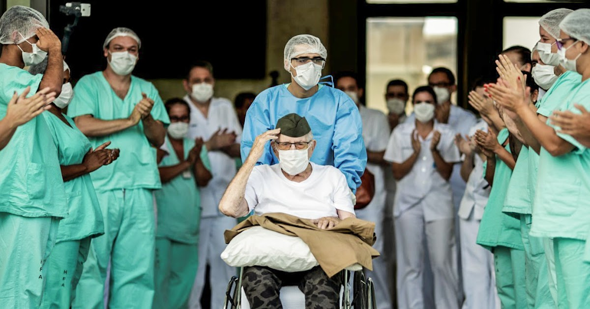

Veterano da 2ª Guerra Mundial vence Covid-19 aos 99 anos

Aos 99 anos, o ex-combatente da Força Expedicionária Brasileira (FEB) Ermando Piveta venceu, segundo
ele, a batalha mais difícil que já enfrentou: o coronavírus. Apesar de ser sobrevivente da Segunda
Guerra Mundial, o militar ressaltou que a luta contra a Covid-19 foi extremamente difícil. Após
passar
oito dias internado no Hospital das Forças Armadas (HFA), ele recebeu alta na tarde de ontem, e é
considerado recuperado da doença. Em um momento de incertezas, a histórias de Ermando traz um sopro
de
esperança nesta pandemia.
Foi uma luta tremenda, mais do que na guerra, frisou. Em vídeo divulgado pelo Exército Brasileiro,
Ermando parabenizou a equipe médica do HFA e os militares que prestaram apoio. Na guerra, você mata
ou
vive. Aqui, tem que lutar para poder viver. Saí dessa luta vencedor, afirmou. O ex-combatente deixou
a
unidade de saúde por volta das 14h.
Na saída do hospital, Ermando foi saudado como um vitorioso. Médicos, enfermeiros e demais
profissionais
do HFA se enfileiraram fazendo um corredor, enquanto ele era levado em uma cadeira de rodas sob
aplausos
dos presentes. Até um trompete foi tocado em homenagem a ele por um representante das Forças Armadas
Brasileira.
Muito emocionado, Ermando acompanhou as palmas, e depois levantou os braços em sinal de vitória.
Vibrante, o paciente, já recuperado, posou para uma foto histórica junto aos profissionais de saúde.
Com
a voz baixa e abafada pela máscara, ele agradeceu aos cuidados de toda a equipe do hospital. A filha
de
Ermando, Vivian Piveta, também falou algumas palavras de agradecimento, e disse não saber onde o pai
foi
contaminado.
Herói
De acordo com Vivian, esse momento significa esperança para todos. Sem dúvida, é uma grande mensagem de que a gente pode vencer e que Deus é presente, comemorou emocionada.
O médico à frente do atendimento de Ermando, o infectologista Hemerson Luz, ressaltou que o paciente faz parte do grupo de maior letalidade para a Covid-19. Todos ficamos apreensivos, esperando até um desfecho desfavorável para ele. Porém, surpreendentemente, ele superou, explicou. De acordo com o especialista, o ex-combatente apresentou sintomas no final de março, e em abril teve pneumonia, quando foi internado. É um caso de esperança, e mostra que existe possibilidade de cura para todos, destacou.
Ermando estava hospitalizado na ala destinada aos pacientes do novo coronavírus desde 6 de abril. Ele recebeu alta do hospital, coincidentemente, no mesmo dia em que se comemora 75 anos da Tomada de Montese, campanha de sucesso das tropas brasileiras na Itália, durante a Segunda Guerra Mundial.
Em setembro de 1942, o ex-combatente foi tripulante do navio Almirante Alexandrino, que viajou do Rio de Janeiro até Dakar, no Senegal. No país africano, participou de treinamentos de guerra. Em seguida, atuou nas ações de guarda da costa brasileira em Fernando de Noronha, Pontal do Cururipe, Natal e Recife.